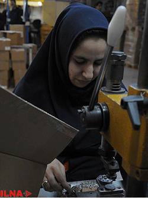

|
|

اعلام "روز کارگران زن" توسط ستاد مرکزی گرامیداشت روز جهانی کارگر
جمعه8 اردیبهشت 1391
شهرزادنیوز: ستاد مركزی گراميداشت هفته كارگر به مناسبت «روز كارگران زن» بيانيهای صادر و در بخشی از آن اعلام کرد که اگر دیروز سخن از کارگران نمونه فقط برای مردان بود، امروز دیگر نمیتوان از نقش پررنگ زنان در اشتغال این مرزو بوم و بهرهمندی آنان از فراست٬ تجربه و خلاقیت منحصر به فرد چشم پوشید.
در متن این بیانیه، که خبرگزاری ایلنا آن را تحت عنوان "فرهنگ کار فارغ از نگاه جنسیتی است"، منتشر کرده، همچنین آمده است: آنچه که برای ما مهم است، خارج از هرگونه نگاه جنسیتی، سرلوحه قراردادن کار و فرهنگ کار است و ما را بر آن می دارد که عدالت هم رعایت شود و در این راه برای آن که نشان بدهیم هفته کارگر متعلق به همه کارگران است، روزی را به این عزیزان اختصاص دادهایم. چه ٬ زنانی نیز در میانمان هستند که به دلایلی سرپرستی یک خانواده را به دوش میکشند.
گفتنی است که دستمزد مزد زنان شاغل در جمهوری اسلامی، بطور میانگین، حدود دو سوم دستمزد تصویب شده و نرخ بیکاری زنان دو برابر مردان می باشد.